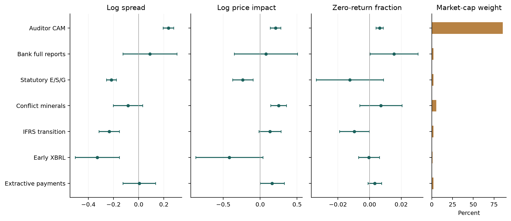
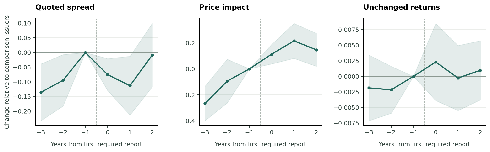
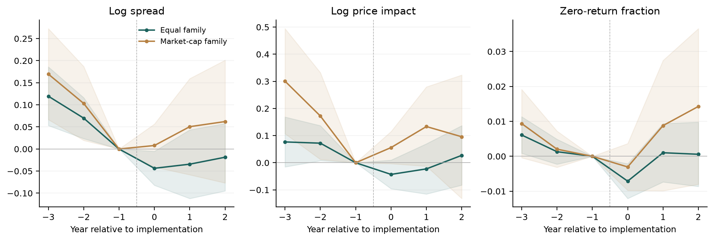

Policy diffusion
How reporting requirements affect stock trading, and why countries adopt them.
Sample and data
| Stock markets | Datastream prices, quotes and trading data, 2000–2025: 90 jurisdictions and 1,055,142 stock-year observations. One observation is one stock in one year. |
|---|---|
| Reporting rules | A register of 17 regulation families, with laws, policy histories and reporting dates. |
| Company coverage | Original company reports and regulatory filings support first-year comparisons for nine families; seven have enough data for the longer window. |
| Policy adoption | Country adoption dates, earlier adoption by peers, economic outcomes and external finance indicators. |
The nine families cover audit reports, electronic financial filings, conflict minerals, bank country reports, IFRS, ESG, extractive payments, governance and greenhouse-gas reporting. These company samples are a subset of the global stock-market data.
We compare changes in covered companies with changes in comparison companies around their first required report. Country GDP determines weights within each study; company market value determines weights across regulation families.
Liquidity
| Liquidity measure | First report yearNine reporting families | Years 0–2Seven reporting families |
|---|---|---|
| Bid–ask spread (log) | +0.190[+0.154, +0.225] | -0.066[-0.144, +0.012] |
| Price impact of trading (log) | +0.219[+0.159, +0.280] | +0.159[+0.062, +0.255] |
| Unchanged-return fraction | +0.0060[+0.0039, +0.0081] | +0.0010[-0.0033, +0.0053] |
Market-cap weights. First year: nine families; years 0–2: seven. Brackets show issuer-sampling ranges, not causal confidence intervals. Spread and price impact are logged; unchanged returns are a fraction.
Spreads widen and price impact rises in the first year. Over years 0–2, spreads narrow but price impact remains higher. The results do not show a common improvement in liquidity.
Higher spreads mean a larger gap between buying and selling prices. Higher price impact means trading moves prices more. Both indicate less liquid shares.
Liquidity by regulation

Audit reporting accounts for 87.6% of the market-cap weight. The pooled estimate mainly reflects this regime.
Equal family weights change the first-year spread estimate from +0.190 to −0.078. Weighting comparison.
Before and after reporting

Seven families. Year 0 is the first required report; year −1 is the reference. Shading shows issuer-sampling ranges.
Covered companies and comparison companies already differ before reporting starts. Earlier disclosures and other reforms may explain part of the later changes.
Policy diffusion
| Mechanism | Measure |
|---|---|
| Competition | Earlier adoption among countries with similar export markets. |
| Learning | Earlier economic and liquidity outcomes in neighbouring countries. |
| Emulation | Earlier adoption among countries sharing a language, legal tradition or international organisation. |
| External finance | IMF credit and foreign aid relative to the economy. |
Of 1,330 model designs, 433 coefficients have stable estimates; none remains significant after adjustment for multiple testing. The evidence does not establish a diffusion mechanism. Full results.
Appendix
Weights and full results
The paper reports both equal-family and market-cap weights. They answer different questions: the average reporting family versus the mix of rules associated with larger sampled issuers. Neither specification is chosen for the direction of its result.
| Population, horizon and liquidity measure | Equal family Estimate [interval] | Market-cap family Estimate [interval] |
|---|---|---|
| A. Geographic exposure First year (15 families): Log spread | -0.029 [-0.068, +0.011] | +0.021 [-0.021, +0.063] |
| A. Geographic exposure First year (15 families): Log price impact | -0.045 [-0.087, -0.003] | +0.019 [-0.050, +0.087] |
| A. Geographic exposure First year (15 families): Zero-return fraction | -0.0082 [-0.0112, -0.0052] | -0.0027 [-0.0065, +0.0012] |
| A. Geographic exposure Years 0-2 (9 families): Log spread | -0.017 [-0.078, +0.044] | +0.045 [-0.035, +0.125] |
| A. Geographic exposure Years 0-2 (9 families): Log price impact | -0.013 [-0.081, +0.054] | +0.096 [-0.024, +0.216] |
| A. Geographic exposure Years 0-2 (9 families): Zero-return fraction | -0.0006 [-0.0064, +0.0053] | +0.0070 [-0.0070, +0.0210] |
| B. Report-based issuer studies First year (9 families): Log spread | -0.078 [-0.123, -0.033] | +0.190 [+0.154, +0.225] |
| B. Report-based issuer studies First year (9 families): Log price impact | +0.009 [-0.062, +0.079] | +0.219 [+0.159, +0.280] |
| B. Report-based issuer studies First year (9 families): Zero-return fraction | +0.0007 [-0.0035, +0.0049] | +0.0060 [+0.0039, +0.0081] |
| B. Report-based issuer studies Years 0-2 (7 families): Log spread | -0.054 [-0.124, +0.016] | -0.066 [-0.144, +0.012] |
| B. Report-based issuer studies Years 0-2 (7 families): Log price impact | +0.071 [-0.026, +0.167] | +0.159 [+0.062, +0.255] |
| B. Report-based issuer studies Years 0-2 (7 families): Zero-return fraction | -0.0019 [-0.0065, +0.0027] | +0.0010 [-0.0033, +0.0053] |
GDP weights within families. Higher outcomes indicate lower liquidity. Panel A describes individual outcomes under geographic policy exposure, not verified legal coverage; intervals condition on country sampling. Panel B intervals describe issuer sampling, retaining shared-issuer covariance; they are not causal policy confidence intervals. Small common policy waves, comparison selection, spillovers and pre-policy differences remain material. Family support differs across horizons. All outcomes and both weights are retained. The supplement reports every family estimate, alternative within-family weights, banking phases, support failure and single-family omission; unsupported families are not assigned zero.
The paper’s complete longer-window figure

Every covered-issuer aggregate · Weight decomposition · Omit each family in turn · Broader geographic comparisons
Company coverage and dates
All 1,052 previously unresolved or entity-withheld CAM filing cases are classified. A wider review of 2,299 first-required reports confirms CAM text in 2,292; the seven unconfirmed cases remain separate. Legal eligibility and observed reporting are not treated as the same fact.
Cisco’s first Form SD filing date is 30 May 2014. All 15 source-selected early-XBRL candidates have filing dates checked against original format-bearing documents. The bank-report study includes five publishers. Exact filing, public availability and first-ever disclosure dates remain distinct.
| Family (study cohort) | First-year Treated / comparison | Balanced Treated / comparison | Log spread | Log price impact | Zero-return fraction |
|---|---|---|---|---|---|
| Auditor CAM (2019-21) | 1,863 / 2,988 | Unsupported | +0.230 | +0.240 | +0.0065 |
| Early XBRL (2009) | 6 / 62 | Unsupported | -0.329 | -0.417 | -0.0004 |
| Conflict minerals (2014) | 3 / 70 | 3 / 45 | -0.085 | +0.249 | +0.0071 |
| Bank full reports (2015) | 5 / 21 | 5 / 20 | +0.066 | +0.051 | +0.0156 |
| Canadian IFRS (2012) | 4 / 42 | 4 / 39 | -0.235 | +0.132 | -0.0096 |
| German E/S/G (2018) | 3 / 35 | 3 / 31 | -0.217 | -0.235 | -0.0124 |
| Extractive payments (2016) | 7 / 35 | 7 / 24 | -0.008 | +0.128 | +0.0044 |
| UK Code revision (2012) | 5 / 40 | 5 / 37 | -0.155 | -0.035 | +0.0003 |
| UK greenhouse gases (2014) | 4 / 43 | 4 / 33 | +0.029 | -0.035 | -0.0056 |
| Alternative bank phase (2014) | 23 / 21 | 22 / 20 | +0.035 | -0.343 | +0.0006 |
First-year estimates use GDP weights within each study. Counts are issuer-cohort observations; comparisons can recur across CAM cohorts. The first nine rows enter the principal aggregate. The final row replaces the bank-full-report study in a separate sensitivity; banking is never counted twice. UK governance is a 2010 Code revision, not initial governance reporting. UK carbon is mandatory greenhouse-gas disclosure, not comprehensive E/S/G or later TCFD reporting. These source-selected studies do not cover every eligible issuer or all seventeen attempted families. CAM timing follows documented eligibility. Seven source-admitted filings lack confirmed CAM text; a stricter content comparison appears in the supplement.
Regulation definitions
Mandatory and voluntary reporting. A reporting requirement is distinguished from a company’s earlier voluntary disclosure. A first statutory report need not be the first time investors received the information.
Environmental, social and governance disclosure. A rule covering greenhouse-gas emissions is environmental disclosure; it is not automatically a requirement to report across all three ESG categories. The UK carbon study and German statutory nonfinancial-reporting study are therefore kept distinct.
Public and confidential country-by-country reporting. Public bank reports make country information available to investors. Confidential tax reports go to tax authorities and are not public issuer disclosures. Their filing dates cannot be inferred from the date a law was enacted.
Historical group boundaries, financial thresholds, listing venues and some earliest publication dates remain incomplete. No missing filing date or unsupported policy effect is filled with an assumed value.
Scope review for all 17 families · The original regulation register and sources · Resolved and remaining coverage gaps
Abstract and manuscript
We study how reporting mandates relate to stock liquidity across financial and nonfinancial disclosure regimes. Our setting combines a global market panel with original reports that establish coverage and reporting dates for nine regulation families. We distinguish the average family from the regulatory exposure of large issuers. First-year log-spread comparisons are -0.078 under equal family weights and +0.190 under market-capitalisation weights. Audit reporting accounts for 87.6% of the latter weight; a family-by-family decomposition explains the difference between the aggregates. Seven families support longer-window comparisons. Earlier disclosure, different liquidity measures and pre-policy trends limit a common causal interpretation. We also examine international adoption using lagged competition, learning, emulation and external-dependence measures. No coefficient survives the full multiplicity correction. The evidence highlights policy composition and the information already available to investors when assessing reporting regulation.